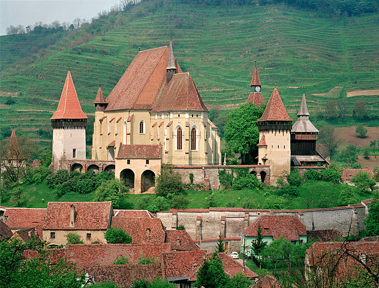
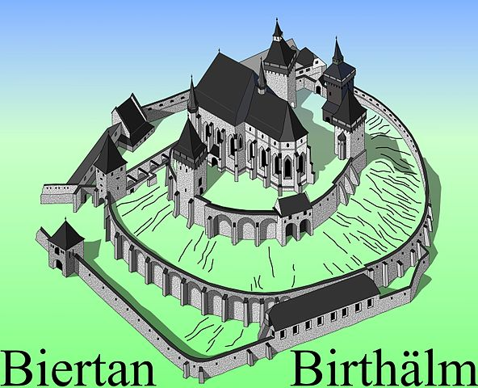
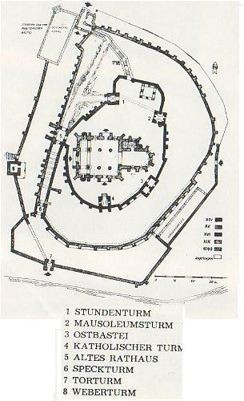

Biserica fortificată din Biertan
Descriere
Biserica evanghelică fortificată din Biertan, județul Sibiu, a fost construită în secolul al XII-lea. Figurează pe lista monumentelor istorice 2010, cod LMI SB-II-a-A-12328, cu următoarele obiective:
▸ Cod LMI SB-II-m-A-12328.01 - Biserica evanghelică, 1490 - 1516;
▸ Cod LMI SB-II-m-A-12328.02 - Incintă fortificată interioară, cu trei turnuri, bastion, turn de poartă, secolul al XV-lea;
▸ Cod LMI SB-II-m-A-12328.03 - Incintă fortificată mediană, cu bastion (azi casa paznicului) și scară de lemn, acoperită, turn, secolul al XVI-lea.
▸ Cod LMI SB-II-m-A-12328.04 - Incintă fortificată exterioară, cu turn, turn de poartă, zwinger, secolul XVI - XVII.

Istoric
Localitatea a fost atestată documentar pentru prima dată în anul 1224.
Biertanul face parte dintre primele așezări germane de sași din Ardeal fiind cuprins în cele „Două Scaune” (Mediaș și Șeica) în Diploma Andreeană (Andreaneum). Localitatea Biertan este atestată documentar în 1283, într-un document alături de Mediaș și Moșna, toate trei localitățile aflate intr-o competiție acerbă pentru obținerea centrului administrativ al celor „Două Scaune”. Astfel fiecare din cele trei localități încercă să-și mărească renumele printr-o construcție sacră cât mai impunătoare.

Machetă pentru biserica fortificată din Biertan
În 1397 este atestat ca cetate. Ca orice aşezare săsească, avea organizare urbanistică, remarcându-se stilul francon al şirurilor de case dispuse în jurul unei pieţe centrale, deasupra careia se înalţă impunătoarea biserică-cetate. Impresionantul monument de cult îmbină armonios stilul gotic cu cel al Renaşterii, apărat fiind de trei ziduri de incintă cu turnuri şi bastioane medievale. Prima incintă a cetăţii este atribuită secolului al XII-lea, când probabil a fost ridicată şi prima biserică (Sf. Maria). Biserica actuală a fost ridicată în 1486-1524, în stil gotic-târziu.
Biserica
Complexul arhitectural medieval este alcătuit din biserica şi centura de fortificaţii, fiind amplasat în centrul aşezării, pe un deal. Biserica de tip hală, ocupa partea centrală a complexului, fiind construită între anii 1490 şi 1520 în stilul gotic târziu, fiind ultima din Transilvania înălţată în acest stil.

Planul fortificaţiei din Biertan
Construcţie monumentală, de mari dimensiuni, are trei hale de înălţimi egale. Intrarea se face prin trei porţi: de vest, de nord şi de sud. Meşterii din Viena şi Nürnberg sunt părinţii spirituali ai celor care au realizat între 1483 şi 1513 splendidul altar poliptic al bisericii de aici, cel mai mare din ţară, cu cele 28 de panouri pictate ale sale. Amvonul, sculptat în piatră, din 1500, operă a meşterului Ulrich din Braşov, trădează puternica influenţă sud-germană.